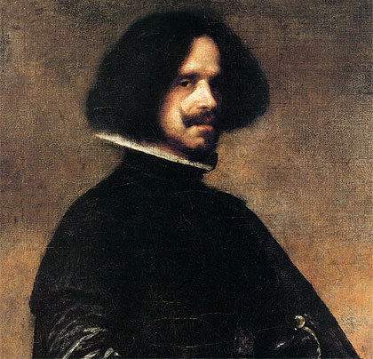
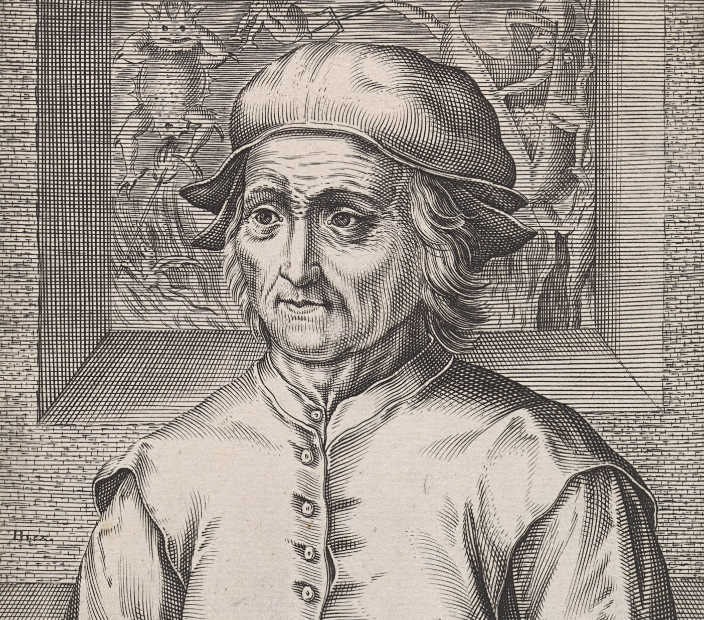
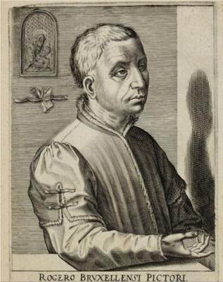

Francisco José de Goya y Lucientes, Nacido
en Fuendetodos el
30 de marzo de 1746-Burdeos y murio el 16 de abril de 1828 fue un pintor y grabador español.
Su obra abarca la pintura de caballete y mural, el grabado y el dibujo. Su estilo evolucionó
desde el rococó, pasando por el neoclasicismo, hasta el prerromanticismo, siempre
interpretados de una forma personal y original,2 y siempre con un rasgo subyacente de
naturalismo, del reflejo de la realidad sin una visión idealista que la edulcore ni
desvirtúe, donde es igualmente importante el mensaje ético.

Diego Rodríguez de Silva
Diego Rodríguez de Silva y Velázquez,
Nacido en Sevilla el 6
de junio de 1599 y 6 de agosto de 1660 conocido como Diego Velázquez, fue un pintor barroco
español considerado uno de los máximos exponentes de la pintura española y maestro de la
pintura universal. Pasó sus primeros años en Sevilla, donde desarrolló un estilo naturalista
de iluminación tenebrista, por influencia de Caravaggio y sus seguidores. A los 24 años se
trasladó a Madrid, donde fue nombrado pintor del rey Felipe IV y cuatro años después fue
ascendido a pintor de cámara, el cargo más importante entre los pintores de la corte.

Jheronimus van Aken
Jheronimus van Aken, en español El Bosco.
Nacido en neerlandesa en 1450 y murió en 1516 , El Bosco no fechó ninguno de sus cuadros
y son relativamente pocos los que llevan una firma que pueda considerarse no apócrifa. Lo
que se conoce de su vida y de su familia procede de las escasas referencias que aparecen en
los archivos municipales de Bolduque y, en especial, en los libros de cuentas de la cofradía
de Nuestra Señora, de la que fue miembro jurado.

Van Der Weyden
Rogier van der Weyden, también conocido como Rogier
de la Pasture. Nacido en Tournai, hacia 1399/1400-Bruselas y murió en 18 de
junio de 1464. fue un pintor primitivo flamenco. Formado en el taller de Robert Campin, en
1435 fue nombrado pintor de la ciudad de Bruselas. Aunque gozó de considerable prestigio en
vida y fue uno de los más influyentes artistas de su tiempo, no se conocen pinturas firmadas
ni existe documentación precisa sobre contratos o recibos de pago que permitan asignarle con
entera certeza ninguna obra.